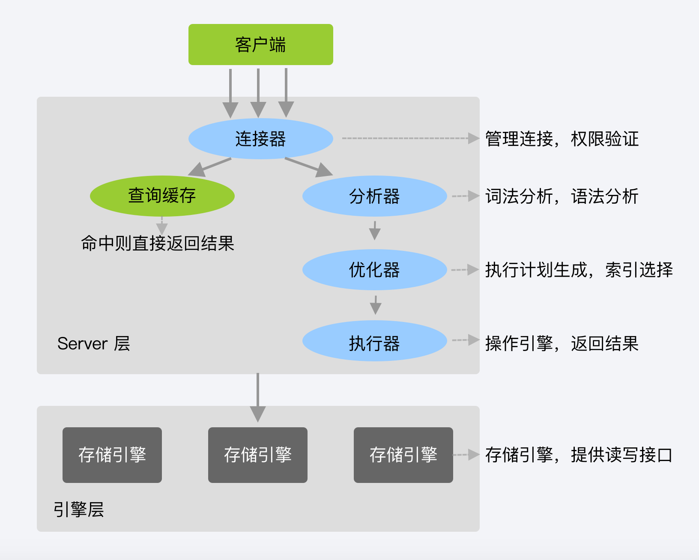

[基础] 一条查询 SQL 语句是怎么执行的
示例语句
SELECT * FROM T WHERE ID = 10;
在理解 MySQL 查询数据过程之前，先看一下 MySQL 的基本架构示意图

根据架构示意图，可以看到 MySQL 每个部分都做了什么
连接器
TCP 握手后保持连接，默认 8 小时。所以尽量使用长连接或连接池操作。
查询缓存
已执行过的 SQL 会以 KV 的形式缓存下来，不建议使用
更新表操作会清空缓存
静态配置标表比较适合使用查询缓存
MySQL 8.0+ 版本取消了查询缓存
优化器
决定选择使用索引
join 连表查询时，决定表连接顺序
执行器
会在 SQL 执行前先判断执行权限，然后根据有无索引来执行 SQL
比如
SELECT * FROM T WHERE ID = 10;
- 无索引
-
- 有索引
-
返回顶部⬆︎